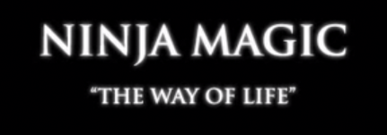

ニンジャの...バンド!! Ninja Magic

スウェーデンのメタルバンド。Ninja Magic。 Way of the life の、どう見ても自宅の周りと思われる雪原で撮影された、 非常に DYI 感漂う PV で日本国内の一部の人々にNRSをもたらした。
DYI 感漂うPV


画質も非常に悪いが、ハンドメイドのニンジャセッションの情熱は非常に伝わってくる。
個人的には、この、吹き矢 - 指間でキャッチ - 悔しがるの流れがとても好きだ。
当時のメンバー
以下の3名
- ワサビ・サンダーボーン
- カタナ・シュリケン
- カワサケ・ヤマモト
現在のメンバー
今、オフィシャル Facebook アカウントを見たらメンバーが入れ替わって6人になっていた。 また、当時の DYI 感は薄れ、なかなか元気に活躍をしているようだ
- Tama Gucci
- Wasabi Thunderborn
- Katana Shuriken
- Terry Yaki
- Kimono Kistereo
- Chi-Chi Ha

オフィシャル Facebook アカウント
iTunes
なんと iTunes で楽曲を販売中なので、興味のある方はこちらから